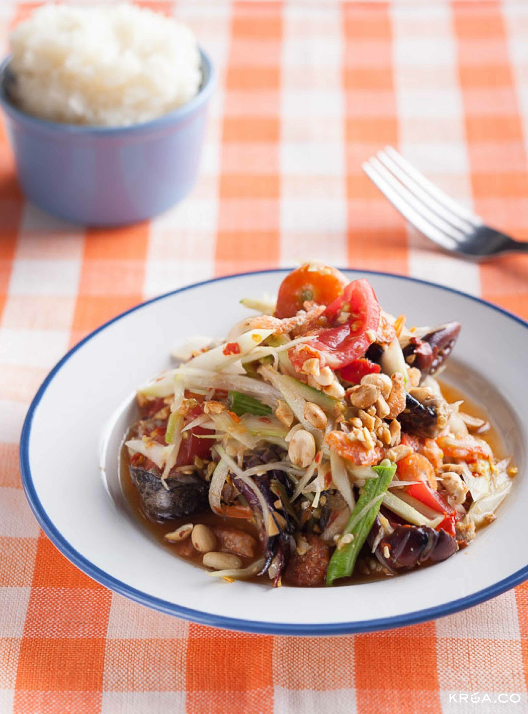
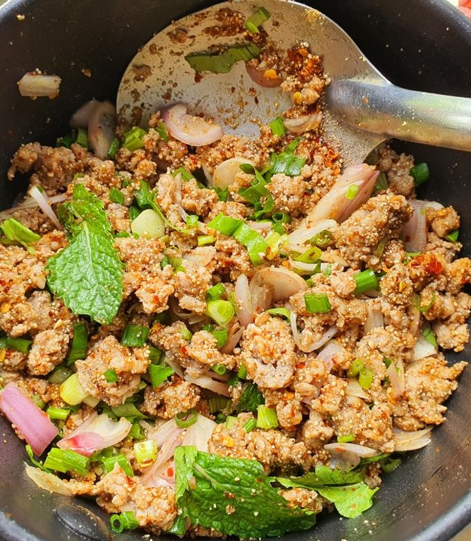
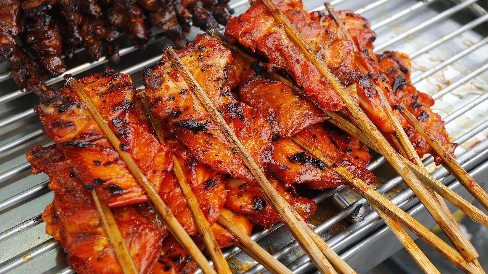
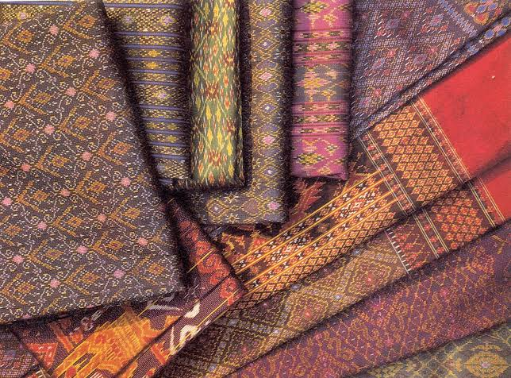
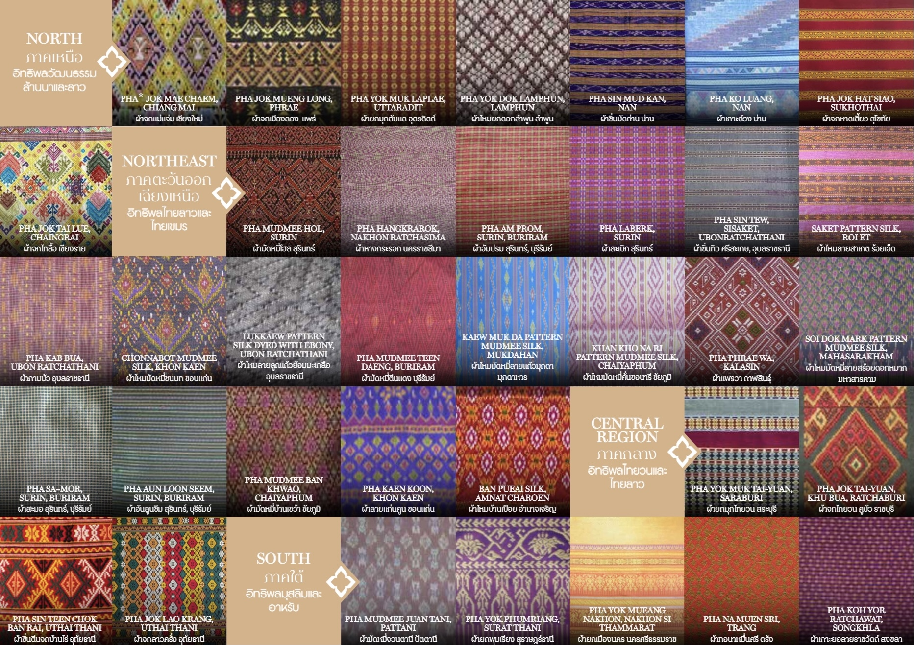
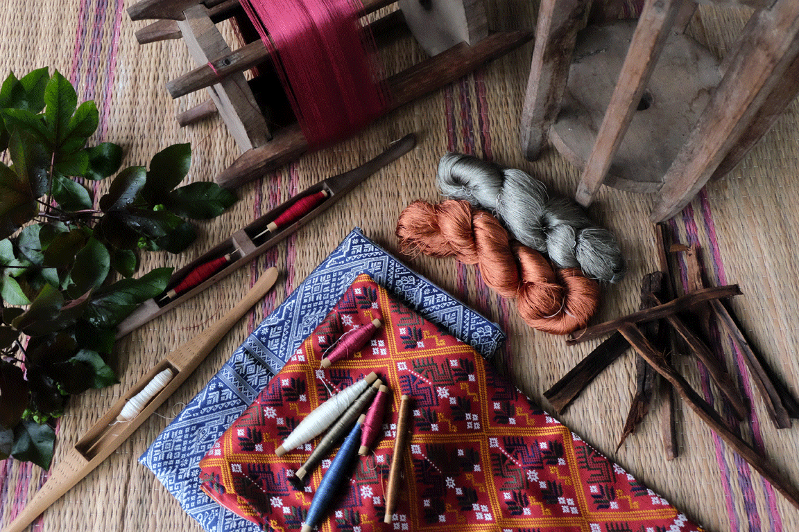
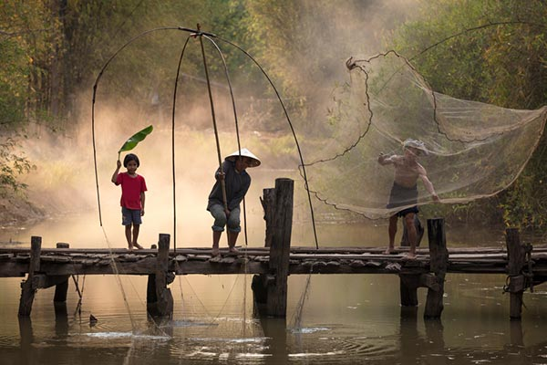

ประเพณีบุญบั้งไฟ
ประเพณีที่จัดขึ้นเพื่อขอฝนก่อนเข้าสู่ฤดูทำนา ชาวบ้านร่วมกันทำบั้งไฟและจัดขบวนแห่ สะท้อนความเชื่อและความสามัคคีของคนในชุมชน
เสน่ห์แห่งวิถีชีวิตและภูมิปัญญา
ดินแดนแห่งที่ราบสูงที่มีวัฒนธรรมอันหลากหลาย
ประเพณีที่สืบทอดจากรุ่นสู่รุ่น
และวิถีชีวิตที่ผูกพันกับครอบครัวและชุมชน
เสน่ห์รสชาติอีสาน

มะละกอเส้นกรอบ ตำคลุกพริก มะนาว และเครื่องปรุงรสจัด เป็นเมนูคู่ครัวอีสาน ที่กินกับข้าวเหนียวและไก่ย่างได้อย่างลงตัว

หมูสับสุกคลุกข้าวคั่ว พริกป่น มะนาว และสมุนไพร หอมข้าวคั่ว รสเปรี้ยวเผ็ดกลมกล่อม กินคู่ผักสดและข้าวเหนียว

ไก่หมักเครื่องเทศ ย่างจนหนังหอมและเนื้อนุ่ม เสิร์ฟพร้อมน้ำจิ้มแจ่วรสเข้มข้น เป็นคู่โปรดของส้มตำและข้าวเหนียว

ผ้าและวิถีชีวิตการแต่งกายพื้นถิ่นภาคอีสานมีเอกลักษณ์ จากผ้าทอมือและลวดลายที่สะท้อนภูมิปัญญา ของแต่ละชุมชน เช่น ผ้าไหมมัดหมี่ ผ้าขิด และผ้าฝ้ายทอมือ นิยมนำมาใช้ในชีวิตประจำวัน งานบุญ และงานประเพณีสำคัญ

เรื่องราวบนผืนผ้าลวดลายและสีสันของผ้าทอแตกต่างกันไป ตามท้องถิ่นและภูมิปัญญาของช่างทอ การทอผ้าเป็นทั้งงานหัตถกรรมและการถ่ายทอด ความรู้จากคนรุ่นหนึ่งไปสู่อีกรุ่นหนึ่ง

งานฝีมือจากชุมชนชุมชนอีสานมีภูมิปัญญาด้านการทอผ้าไหม การทอผ้าฝ้าย และการจักสาน โดยนำวัสดุในท้องถิ่นมาใช้ให้เกิดประโยชน์ และสร้างสรรค์เป็นเครื่องใช้ในชีวิตประจำวัน

อยู่ร่วมกับธรรมชาติภูมิปัญญาท้องถิ่นยังครอบคลุมการใช้สมุนไพร การทำเครื่องมือเกษตร และการจัดการน้ำ เพื่อการเพาะปลูก ความรู้เหล่านี้เกิดจาก ประสบการณ์และการปรับตัวให้เข้ากับ สภาพแวดล้อมและวิถีชีวิตของชุมชน